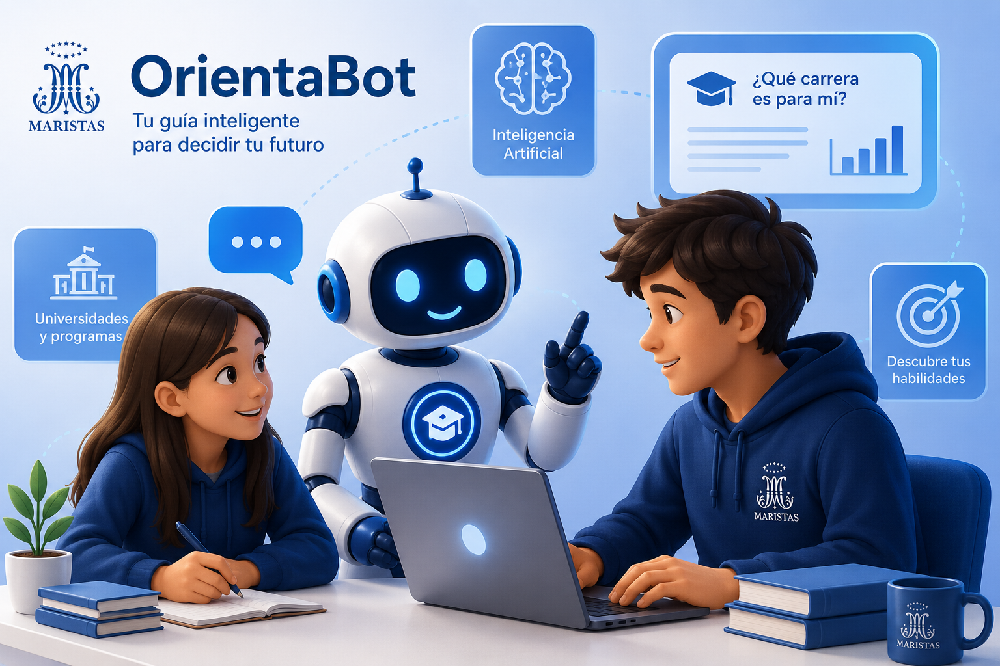

OrientaBot te ayuda a explorar carreras universitarias, carreras técnicas y oficios según tus intereses, habilidades y preferencias.

Puedes comenzar en pocos pasos y obtener orientación adaptada a tus intereses.
Responde preguntas sobre tus gustos, habilidades e intereses.
El sistema analiza tus respuestas y encuentra las áreas que tienen mayor compatibilidad contigo.
Pregunta a OrientaBot sobre carreras, institutos, universidades, oficios y mucho más.
Conversa con OrientaBot y realiza preguntas sobre estudios, carreras, tecnología, educación y otros temas.
Un test de 30 preguntas analiza diferentes áreas para ofrecerte recomendaciones más variadas.
Puedes enviar imágenes al chatbot para resolver ejercicios, interpretar capturas o analizar información visible.
Recibe explicaciones adaptadas a tus preguntas y descubre nuevas posibilidades.
Muchos estudiantes conocen algunas carreras, pero no necesariamente saben qué opciones existen, qué habilidades necesitan o qué alternativa puede adaptarse mejor a ellos.
OrientaBot busca ofrecer una primera orientación accesible para que puedas investigar y comparar diferentes caminos antes de tomar una decisión.
🎯 Descubrir mi perfilRealiza el test o conversa directamente con OrientaBot.